TEDx supports individuals and groups in hosting local, self-organized events around the world, helping world-changing innovators from around the globe to amplify the impact of their projects and activities. At TEDxZurich, you will meet interesting people and learn about topics you never thought about before. This event is a series of short talks, ranging from about five to eighteen minutes length. In between speakers you will listen to amazing music and eat great food.
After two consecutive successful years as Art Director, I’ve decided to hand over the design responsibilities for the third year. Together with my successor, we created the design concept for the event „Opening doors“.
- Multi-Channel Design Concepts and Implementation
- Ensure the TEDx brand consistency and quality
- Connecting People through Creative Ideas
... and more
The result was a theme with vivid illustrations in the style of TEDx, a creative way to tell stories about people and places, compelling ideas, and how to overcome challenges faced by society.
 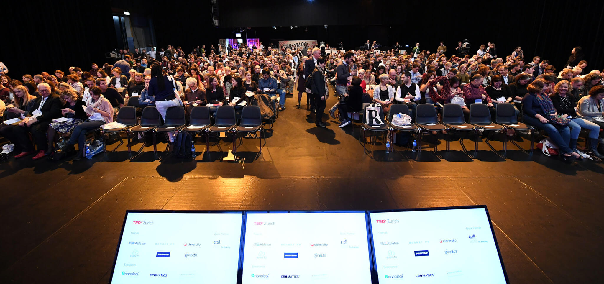
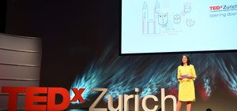
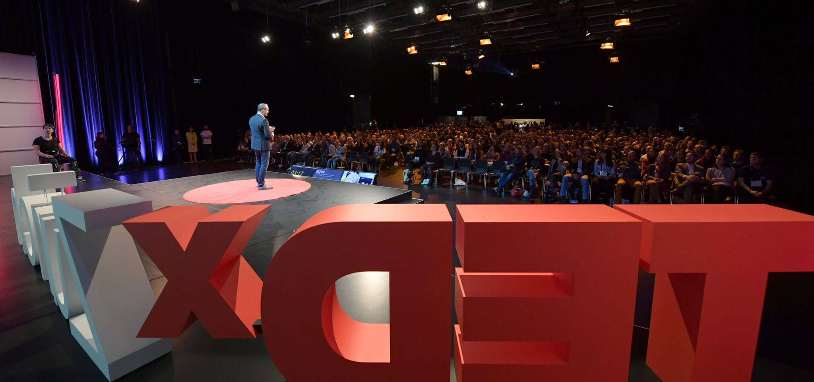
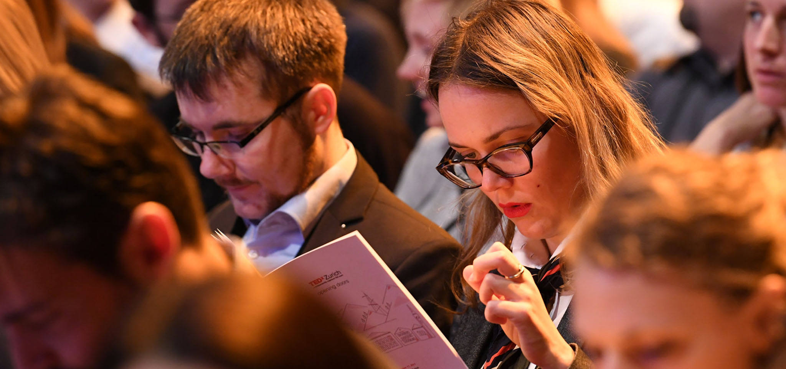
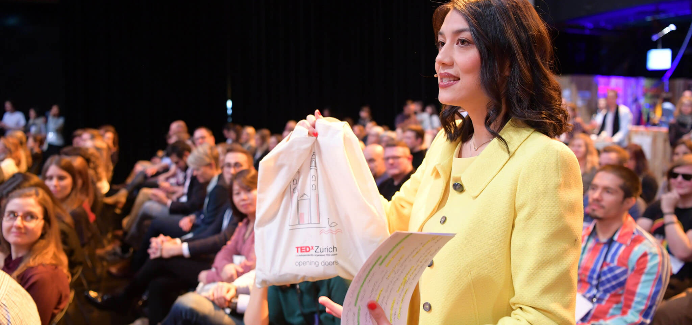
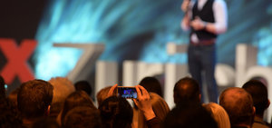
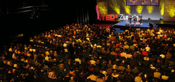
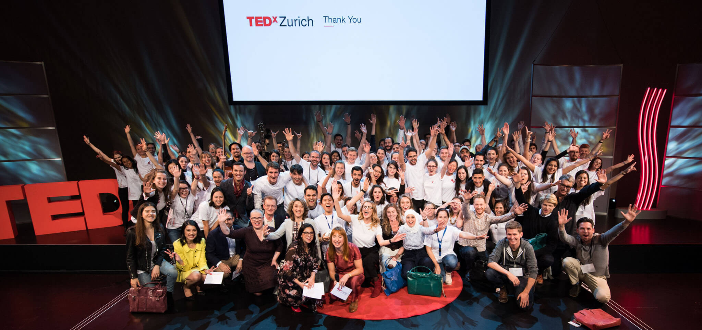
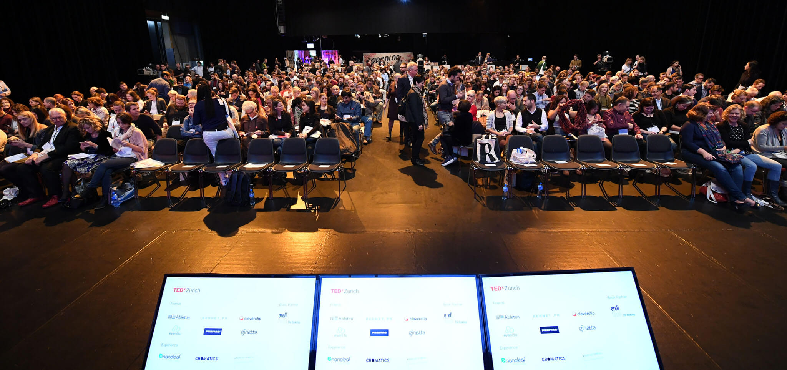
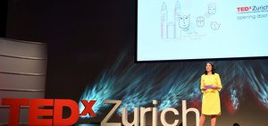
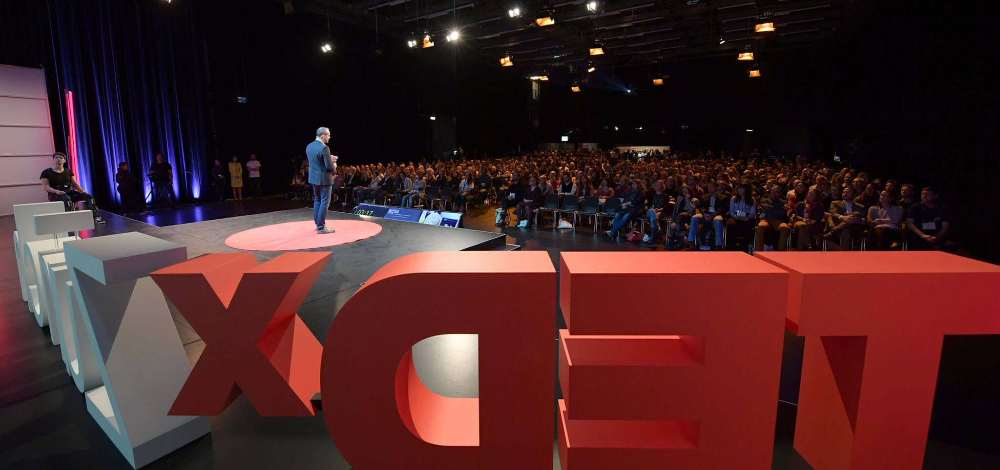
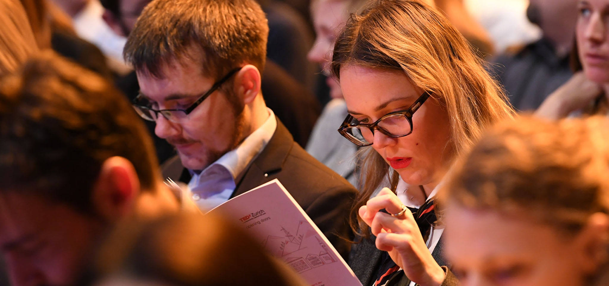
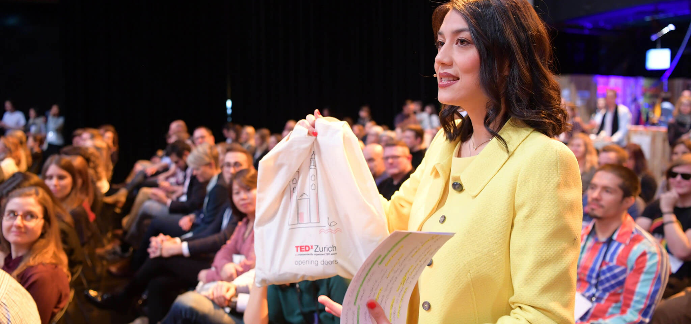
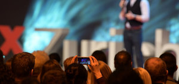
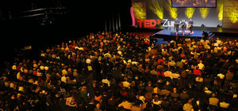
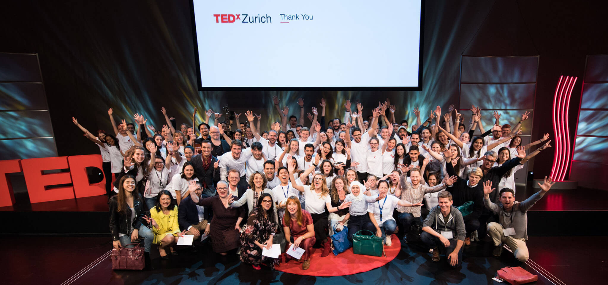